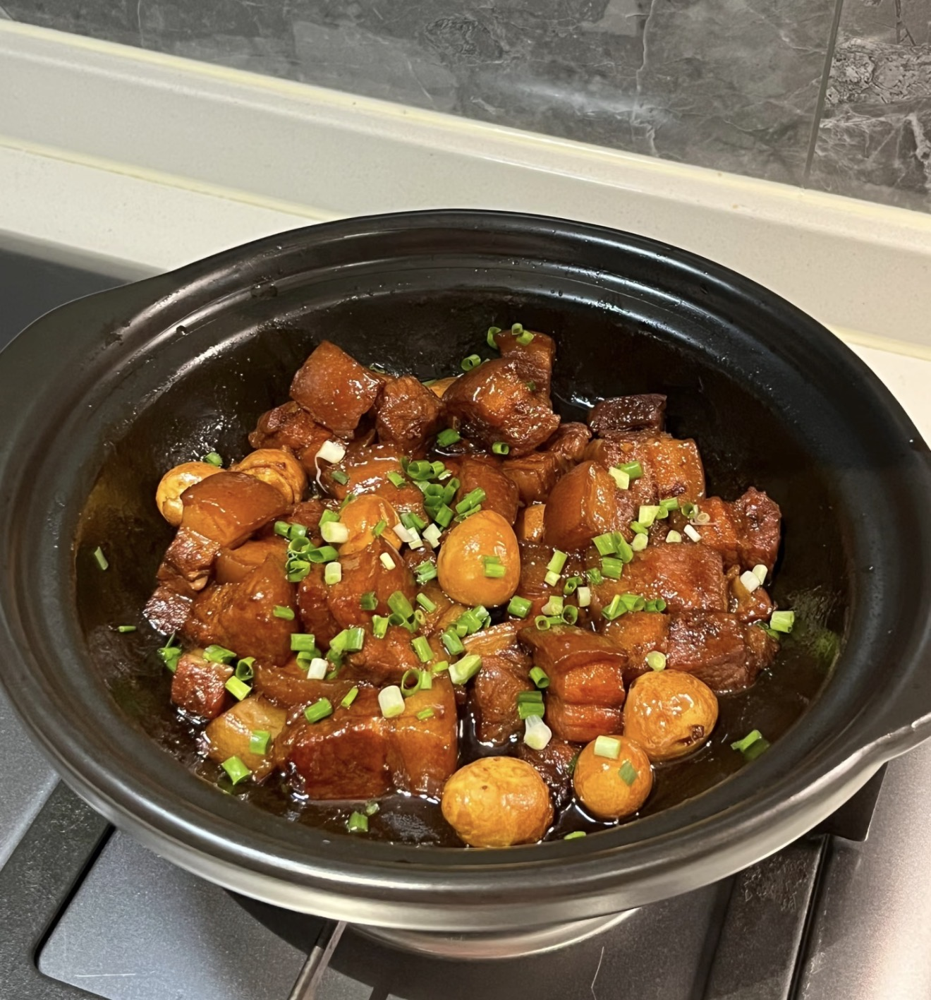

Braised Pork with Quail Eggs
Rich braised pork with tender quail eggs in a savory-sweet sauce.
Ingredients
- Pork belly
- Quail eggs
- Ginger
- Scallions
- Garlic
- Star anise
- Bay leaves
- Cinnamon stick
- Cooking wine
- Soy sauce
- Dark soy sauce
- Oyster sauce
- Rock sugar
- Salt
- Oil
Directions
- Boil and peel quail eggs.
- Cut pork into cubes.
- Blanch pork with ginger and cooking wine.
- Rinse clean.
- Cook pork to render fat.
- Remove excess oil if needed.
- Melt sugar until caramelized.
- Add pork and coat evenly.
- Add sauces and aromatics.
- Pour in hot water to cover.
- Bring to boil, then simmer.
- Add quail eggs.
- Continue simmering.
- Reduce sauce until thick.
- Serve hot.